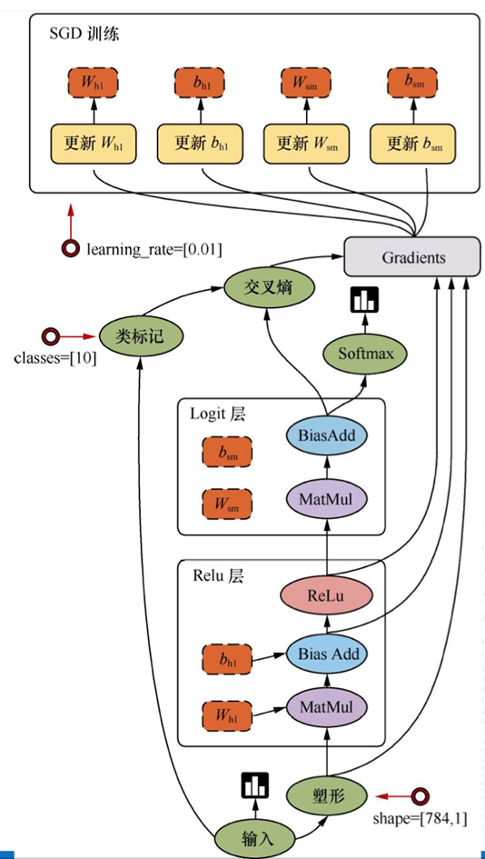
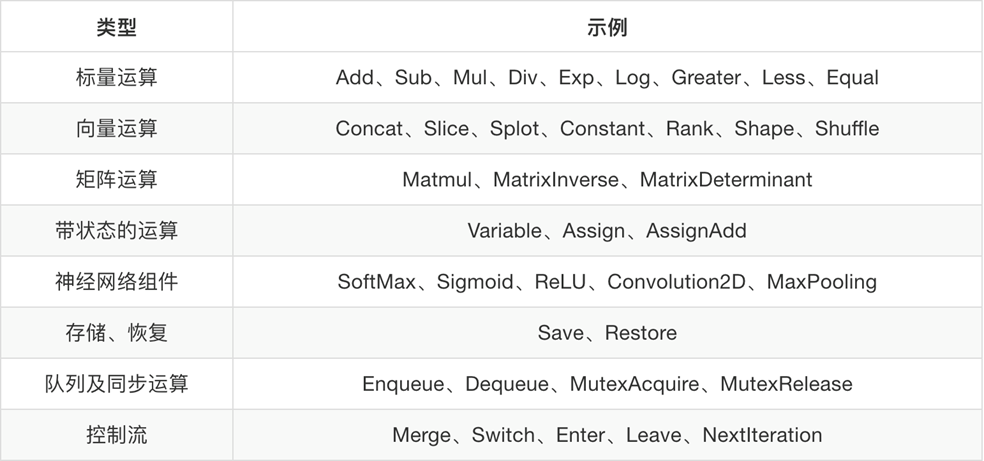
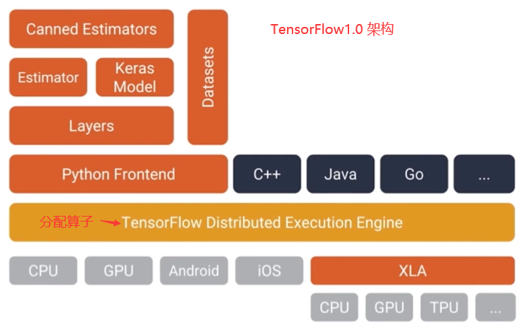
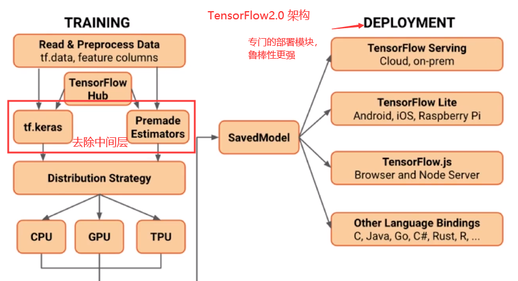

01-TensorFlow2.0基础原文出处:本文由博客园博主hp_lake提供。
原文连接:https://www.cnblogs.com/hp-lake/p/12008559.html
01-TensorFlow基础
Tensorflow是什么
Google的开源软件库
- 采取数据流图，用于数值计算
- 支持多种平台 - GPU、CPU、 移动设备
- 最初用于深度学习，变得越来越通用
Tensorflow数据结构
#数据流图

线：节点之间的输入输出关系，线上运输张量. tensor：张量- 指代数据
- 节点：operation (op): 专门运算的操作节点，所有的操作都是一个op，处理数据
- 只要使用tensorflow的API定义的函数都是OP
- 节点被分配到各种计算设备上运行

- graph: 图 整个的程序结构
- 本质上是一个分配的内存位置，默认有一个图，所有的tensor 和 op 的内存地址都是一样的。
- 不同的图内存地址不一样，计算的过程中互不干扰
- session: 会话： 运算程序的图 （只能运行一张图，可以在会话中指定图去运行 graph = g）
- 运行图的结构
- 分配资源计算
- 掌握资源（变量、队列、线程）
Tensorflow的特性
- 高度的灵活性，便于调用函数，也可以写自己的封装
- 真正的可移植性，在不同的设备上都可以简单运行
- 产品和科研结合
- 自动求微分，主要用于反向传播计算
- 多语言支持，C++， Java , JS, R
- 性能最优化
Tensorflow的前后端系统
- 前端系统：定义程序的图的机构
- 后端系统： 运算图结构
Tensorflow版本变迁
Tensorflow1.0 主要特性
- XLA: Accelerate Linear Algebra
- 引用更高级别的API
- tf.layers/ tf.metrics / tf.losses/ tf.keras
- Tensorflow调试器
- 支持docker镜像，引入tensorflow serving 服务

Tensorflow 2.0 主要特性
- 使用tf.keras 和 eager mode 进行简单模型构建
- 鲁棒的跨平台模型部署
- 强大的研究实验
- 清除了不推荐使用和重复的API

Tensorflow2.0 简化模型开发流程
- 使用tf.data加载数据
- 使用tf.keras 构建模型，也可以使用premade estimator 验证模型
- 使用tensorflow hub进行迁移学习
- 注： 迁移学习 - 使用一个前人预先训练好的，应用在其他领域的网络作为模型训练的起点，站在前人基础上更进一步，不必重新发明轮子。
- 使用eager mode 进行运行和调试
- 使用分发策略进行分布式训练
- 导出到SavedModel
- 使用Tensorflow Serve, Tensorflow Lite, Tensorflow.js
Tensorflow 强大的跨平台能力
- Tensorflow 服务
- 直接通过HTTP/ TEST 或 GTPC/协议缓冲区
- Tensorflow Lite - Android, iOS 和嵌入式
- Tensorflow.js - Javascript 部署
- 其他语言
Tensorflow vs. Pytorch
入门时间（易用性）
- Tensorflow 1.*
- 静态图 ，构建完之后不可以更改, 效率高
- 额外概念， 会话，变量，占位符
- 写样本代码
- Tensorflow 2.0
- 动态图， 构建完之后可以更改， 效率不高，调试容易
- Eager mode 直接集成在python中
- Pytorch
"""
不同方式求解 1 + 1/2 + 1/2^2 + 1/2^3 + ...... + 1/2^50
"""
# 1. tensorflow 1.*求解
import tensorflow as tf
print(tf.__version__)
x = tf.Variable(0.)
y = tf.Variable(1.)
add_op = x.assign(x + y)
div_op = y.assign(y / 2)
with tf.Session() as sess:
sess.run(tf.global_variables_initializer())
for iteration in range(50):
sess.run(add_op)
sess.run(div_op)
print(x.eval())
# 2. pytorch 求解
import torch
print(torch.__version__)
x = torch.Tensor([0.])
y = torch.Tensor([1.])
for iteration in range(50):
x = x + y
y = y / 2
print(x)
# 3. tensorflow 2.0 求解
import tensorflow as tf
print(tf.__version__)
x = tf.constant(0.)
y = tf.constant(1.)
for iteration in range(50):
x = x + y
y = y / 2
print(x.numpy())
# 4. 纯python求解
x = 0
y = 1
for iteration in range(50):
x = x + y
y = y / 2
print(x) # 精度有点不一样
图创建和调试
- Tensorflow 1.*
- Tensorflow 2.0 与 pytorch
全面性
- python缺少少量的功能，使用频次很低
- 沿维翻转张量 （np.flip, np.flipud, np.fliplr)
- 检查无穷与非数值张量（np.is_nan, np.is_inf)
- 快速傅里叶变换 （np.fft)
序列化和部署
- Tensorflow 支持更加广泛，多语言，跨平台
- pytorch 支持比较简单